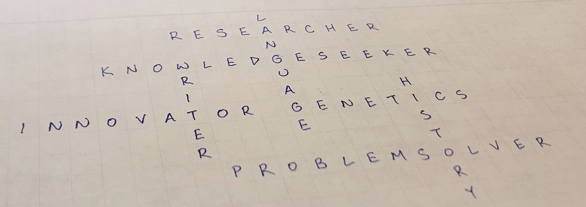

Ava Wu
Seeking knowledge, solving puzzles

Seeking knowledge, solving puzzles
Multidisciplinary researcher and coordinator with diverse interests in science, language, law, and performing arts. I thrive on creating solutions to complex problems, and I welcome opportunities to step outside of my comfort zone (such as designing this website!).
For details on these experiences and more, visit my LinkedIn page!
Project Assistant | Crowell & Moring LLP
Provide practice support to the antitrust group on claims recovery matters.
Social Media Consultant | Interdisciplinary Research Group on Privacy
Develop and execute a social media plan (including writing posts, producing videos, and authoring blogs) to promote the Summer Institute in Computational Social Science, sponsored by Howard University and Mathematica
Previous experiences:
Assistant Lab Manager and Project Coordinator | Interdisciplinary Research Group on Privacy
Student Coordinator, Language Exchange Program | UC Berkeley Student Learning Center
Research Intern | Children's Hospital Oakland Research Institute
Research Assistant | Human Rights Center at UC Berkeley School of Law.
Event Supervisor/Test Writer | Science Olympiad
Bachelor of Arts, French and Molecular & Cell Biology
Biology Emphasis: Genetics, Genomics, and Development
Class of 2020 | University of California, Berkeley
D. Chhetri, Y. Ma, D. San Gabriel, S. Sturla, A. Wu, D.E. Johnson (2021) Computational Association of Perfluorooctanoic Acid Exposure and Human Health Risks. Toxicologist 180(1) 200.
Access the online journal here.
Jouet connecté, Wikipédia, L'encyclopédia libre. Original translation of Connected Toys from English into French by A. Wu.
Read the article here.
Acknowledged research contributor for Silent Witness: Forensic DNA Evidence in Criminal Investigations and Humanitarian Disasters (Oxford University Press 2020), edited by Henry Erlich, Eric Stover, and Thomas J. White.
See a preview on Google Books here.